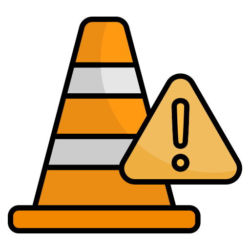
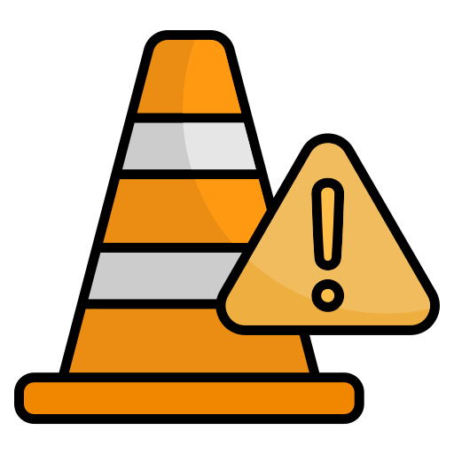

O QUE É UM SINISTRO
RODOVIARIO?
Um sinistro rodoviário é um acontecimento imprevisto e inesperado que ocorre numa via pública, envolvendo veículos ou pessoas, e que resulta em danos materiais e/ou vítimas (ferimentos ou morte). O termo "sinistro" é frequentemente usado no contexto de seguros para referir o evento que aciona o direito a uma indemnização ou para se referir ao próprio dano causado ao bem segurado.
SAIBA MAIS

 
